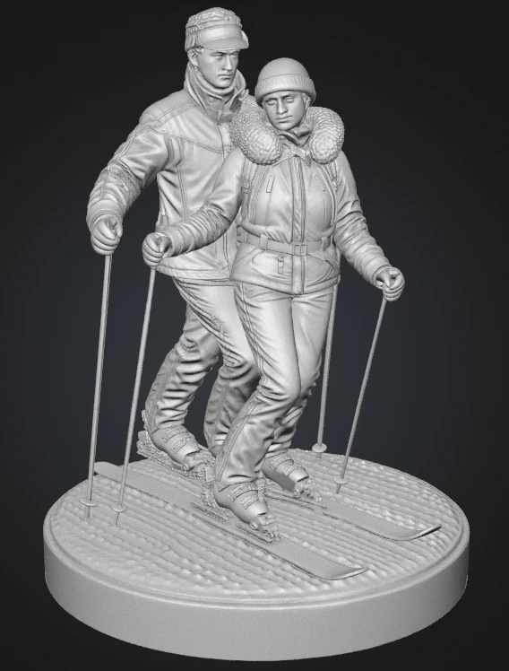

ПОРТРЕТНЫЙ СКУЛЬПТ / STL
Фигурки по фото.
Модели под печать.
Создаю одиночные фигурки и парные композиции. Прорабатываю портрет, позу, одежду и аксессуары, затем готовлю геометрию под выбранный размер и способ печати.
В галерее — рендеры и рабочие виды 3D-моделей.

ПАРНАЯ КОМПОЗИЦИЯ / 01Портрет и поза
Сходство по фотографиям, пропорции, выражение лица и пластика тела.
Одежда и детали
Складки ткани, волосы, очки, украшения, обувь и предметы в руках.
Подготовка STL
Доработка сетки, подставки, толщина деталей и экспорт модели.
РАБОТЫ
Фигурки и композиции
5 моделей · 13 изображений
Нажмите на ракурс для просмотра.
ПРОЦЕСС РАБОТЫ
От фотографий до STL
Фотографии и задача
Нужны снимки лица с нескольких сторон, пример позы, рост фигурки и пожелания к подставке.
Форма и сходство
Собираю композицию, уточняю пропорции и портрет. Согласовываю ракурсы и вношу правки.
Одежда и аксессуары
Прорабатываю складки, волосы, мелкие предметы и надписи. Учитываю масштаб будущей фигурки.
Геометрия под печать
Дорабатываю сетку, толщину и места соединений. Готовлю STL с учётом согласованной технологии печати.
КОНТАКТЫ